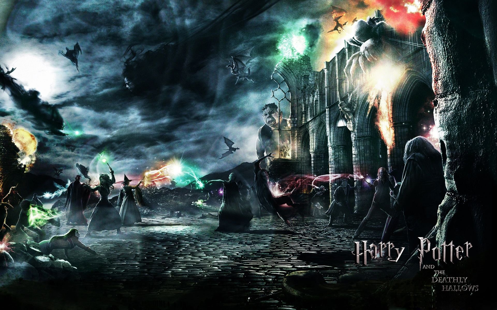

Synopsis
A boy who learns on his eleventh birthday that he is the orphaned son of two powerful wizards and possesses unique magical powers of his own. He is summoned from his life as an unwanted child to become a student at Hogwarts, an English boarding school for wizards. There, he meets several friends who become his closest allies and help him discover the truth about his parents' mysterious deaths.
Review
''Harry Potter and the Sorcerer's Stone" is a red-blooded adventure movie, dripping with atmosphere, filled with the gruesome and the sublime, and surprisingly faithful to the novel. A lot of things could have gone wrong, and none of them have: Chris Columbus' movie is an enchanting classic that does full justice to a story that was a daunting challenge. The novel by J.K. Rowling was muscular and vivid, and the danger was that the movie would make things too cute and cuddly. It doesn't. Like an "Indiana Jones" for younger viewers, it tells a rip-roaring tale of supernatural adventure, where colorful and eccentric characters alternate with scary stuff like a three-headed dog, a pit of tendrils known as the Devil's Snare and a two-faced immortal who drinks unicorn blood. Scary, yes, but not too scary--just scary enough.